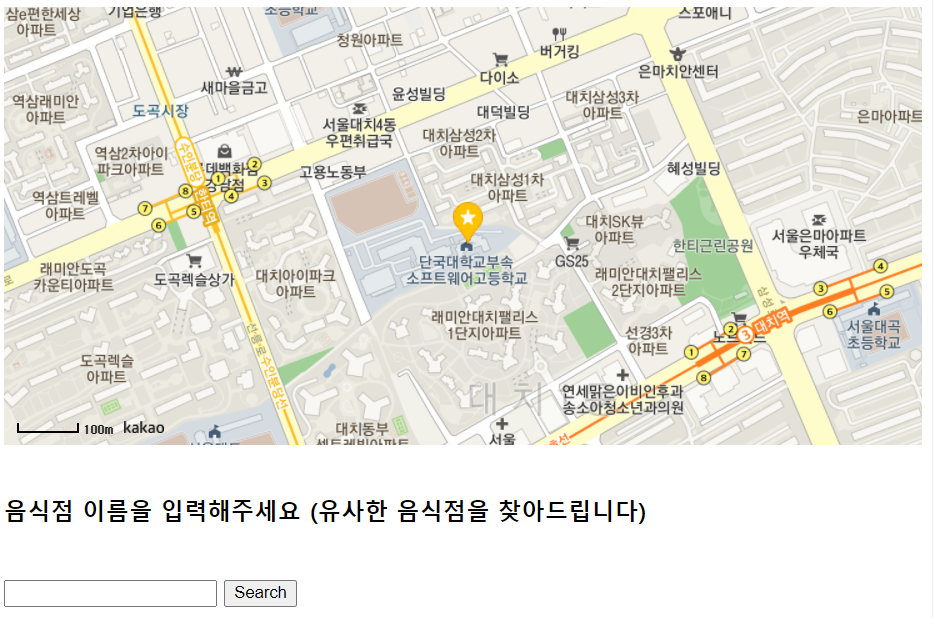
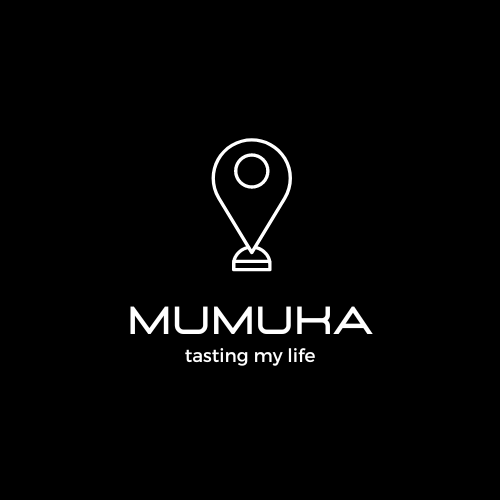
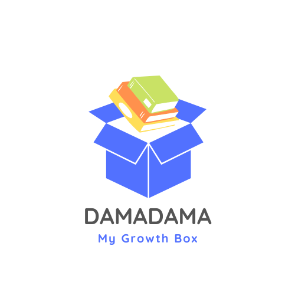

WHO AM I?
프로그래밍 기술과
문이과 지식을 융합으로
창업을 꿈꾸는 학생입니다
ability


History
- 제 1회 K-EDU 인공지능 창작 FEST 금상
- 제 19회 BE THE CEO's 대회 동상
- DKSH재학
- S대 자전 목표
Project
배고파

이 프로젝트는 맛집 추천 웹사이트입니다. 학교 친구들이 석식 메뉴를 고민하는 것을 보고 시작한 프로젝트입니다. python chrome web crawler로 네이버 평점 및 블로그 데이터를 크롤링하였습니다. 그 데이터를 가지고 코사인 유사도 분석 및 데이터 평점 수치를 주관적 함수로 계산하여 프로젝트를 완성하였습니다. 이 프로젝트로 K-EDU AIOT 대회에서 금상을 수상하였습니다. 대회에서 tts기능을 추가하였습니다.
무무까

배고파의 아이디어를 발전시켜 창업동아리를 만들었습니다. 팀원은 총 4명으로 웹, 인공지능(자연어처리) 두 명, 인공지능(추천시스템)으로 구성되어 있습니다. 저는 자연어처리 개발자이자 CEO로서 프로젝트에 참여했습니다.
다마다마

독서에 대한 새로운 관점을 제시합니다. 현재 학교 교육이 '독서'를 중시하기 보다는 문제풀이에 치중되어있다고 생각하여 독서 교육을 강조한 프로젝트입니다. 독서 교육이라는 신념 아래 도서관이 학생들에게 매우 친숙한 공간이 되어야한다고 생각하여 도서관 대출에 대한 편리성을 제고하는 '이미지 인식 기반 도서 대출 시스템'을 설계하였습니다. 또한 현재 교보문고 등에서 제공하고있는 도서 추천 시스템은 최근 출간된 도서로만 추천을 해주는 것을 발견했습니다. 개인에게 출간연도와 상관없이 가장 필요한 책을 추천해주는 도서 추천 시스템을 설계했습니다.